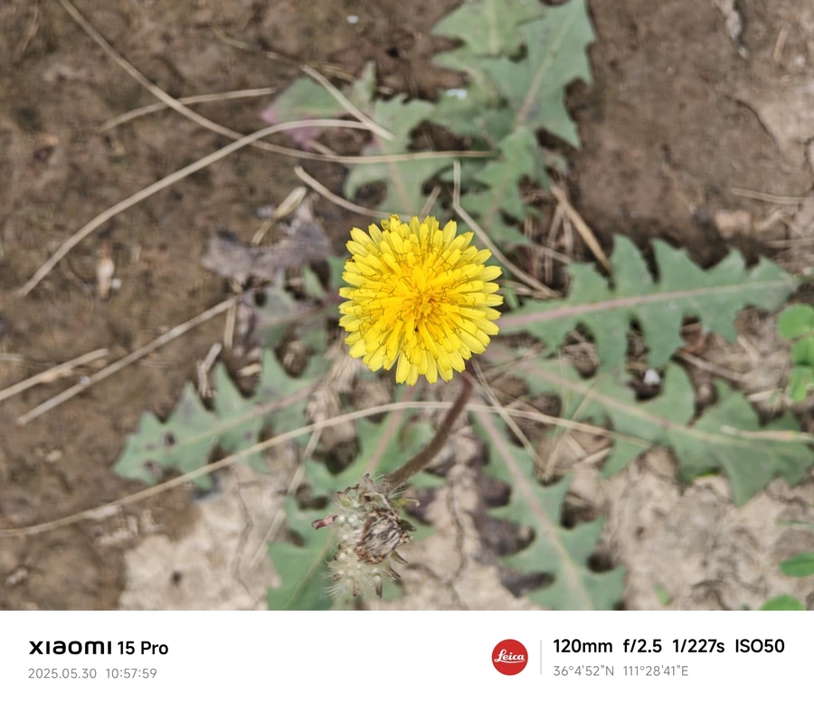

花卉与草本 · 植物界
蒲公英 Taraxacum mongolicum

菊科多年生草本，花后结出带冠毛的瘦果，随风飘散，全草可入药、嫩叶可食，是分布极广的野花，也是常见的野菜。
- 分类
- 门被子植物门纲木兰纲目菊目科菊科属蒲公英属
- 栖息环境
- 山坡草地、田野、路旁及荒地，喜光、耐寒、耐旱
- 地理分布
- 广布于北半球温带，中国各地均有分布
- 保护级别
- 暂无评估
物种志
蒲公英为菊科蒲公英属多年生草本，株高 10–30 厘米，根粗壮、肉质，茎极短。叶片基生，倒披针形，羽状深裂，边缘具齿，排成莲座状。花葶自叶丛抽出，头状花序金黄色，全部由舌状花组成，花期 4–9 月，果期 5–10 月，瘦果顶端有白色冠毛，形成绒球状。
蒲公英广布于北半球温带，中国各地山坡、田野、路旁都能见到，喜阳光充足、耐寒耐旱，对土壤要求不严。它的花清晨开放、傍晚闭合，刮风或阴天时花序也会闭合，种子则借助冠毛随风传播，一株可产生数百至上千粒种子。嫩叶可作野菜凉拌或炒食，根可烘焙后磨粉代咖啡，全草入药有清热解毒、消肿散结之效。
形态与习性
- 株高10–30 厘米，茎极短
- 花期4–9 月，花晨开暮合
- 果期5–10 月，瘦果具白色冠毛
- 光照喜充足阳光
- 水分耐旱，忌长期积水
- 土壤对土壤要求不严，疏松壤土最佳
- 繁殖以播种繁殖为主
- 主要用途药用、嫩叶食用、根代咖啡
趣味知识
- 蒲公英的“绒球”是带有冠毛的瘦果，可借风力传播数公里。
- 花在清晨开放、傍晚闭合，阴雨天也会闭合，可据此判断天气变化。
- 蒲公英根烘焙磨粉后可作咖啡代用品，民间称“蒲公英咖啡”。
- 一株蒲公英一季可产生数百至上千粒种子，繁殖能力极强。